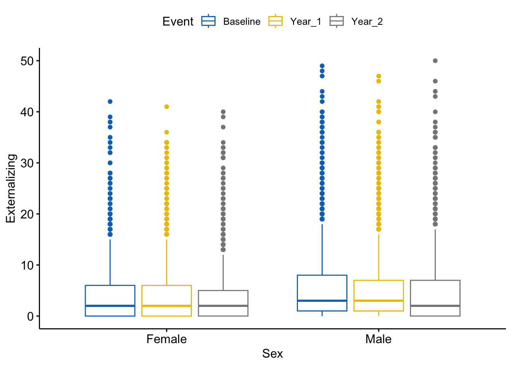

# Install necessary packages (if not already installed)
if (!("lme4" %in% installed.packages())) install.packages("lme4")
if (!("lmerTest" %in% installed.packages())) install.packages("lmerTest")
if (!("tidyverse" %in% installed.packages())) install.packages("tidyverse")
if (!("ggpubr" %in% installed.packages())) install.packages("ggpubr")
if (!("rstatix" %in% installed.packages())) install.packages("rstatix")ex1.pairedsample
#Load packages
library(rstatix)
library(lme4)
library(lmerTest)
library(tidyverse)
library(ggpubr)df_long<- read_csv("/Users/shawes/Desktop/df_long.csv")
df_wide<- read_csv("/Users/shawes/Desktop/df_wide.csv")
# Compute difference score based on CBCL Externalizing subscale scores at baseline (t1) and 1-Year Follow-up (t2)
df_wide$diffscore = df_wide$Externalizing_T1 - df_wide$Externalizing_T0
#Compute statistical summaries for the difference score variable
summary(df_wide$diffscore) Min. 1st Qu. Median Mean 3rd Qu. Max. NA's
-36.0000 -2.0000 0.0000 -0.2574 1.0000 38.0000 12 #Paired samples t-test is used to determine whether the average difference score on some outcome computed across two time points, differs between groups.
stat.test <- df_long %>%
group_by(Sex) %>%
pairwise_t_test(
Externalizing ~ Event, paired = FALSE,
p.adjust.method = "bonferroni"
) #%>%
stat.test# A tibble: 6 × 10
Sex .y. group1 group2 n1 n2 p p.sig…¹ p.adj p.adj…²
* <chr> <chr> <chr> <chr> <int> <int> <dbl> <chr> <dbl> <chr>
1 Female Externalizing Basel… Year_1 2132 2048 1.73e-1 ns 5.18e-1 ns
2 Female Externalizing Basel… Year_2 2132 1872 3.91e-2 * 1.17e-1 ns
3 Female Externalizing Year_1 Year_2 2048 1872 4.14e-1 ns 1 e+0 ns
4 Male Externalizing Basel… Year_1 4381 4210 9.03e-3 ** 2.71e-2 *
5 Male Externalizing Basel… Year_2 4381 3873 2.78e-7 **** 8.33e-7 ****
6 Male Externalizing Year_1 Year_2 4210 3873 6.17e-3 ** 1.85e-2 *
# … with abbreviated variable names ¹p.signif, ²p.adj.signif# Box Plot Visualization based on variables used in paired samples t-test
boxplot <- ggboxplot(
df_long, x = "Sex", y = "Externalizing",
color = "Event", palette = "jco"
)
suppressWarnings(print(boxplot))
# Add statistical test p-values and hide ns
stat.test <- stat.test %>% add_xy_position(x = "sex")
boxplot + stat_pvalue_manual(
stat.test, label = "p.adj.signif",
step.increase = 0.08, hide.ns = TRUE, tip.length = 0
)
suppressWarnings(print(boxplot))
#Scatterplot to visualize relationship between difference scores across groups
# scatterplot <- ggplot (df_wide, aes(x = Externalizing_T0, y = Externalizing_T1, shape = Sex)) + geom_point(size = 3) + geom_smooth(method = lm, se = F) +
# xlab("CBCL Externalizing (x) Baseline") +
# ylab("CBCL Externalizing (x) 1-Year Follow-up")
# suppressWarnings(print(scatterplot))